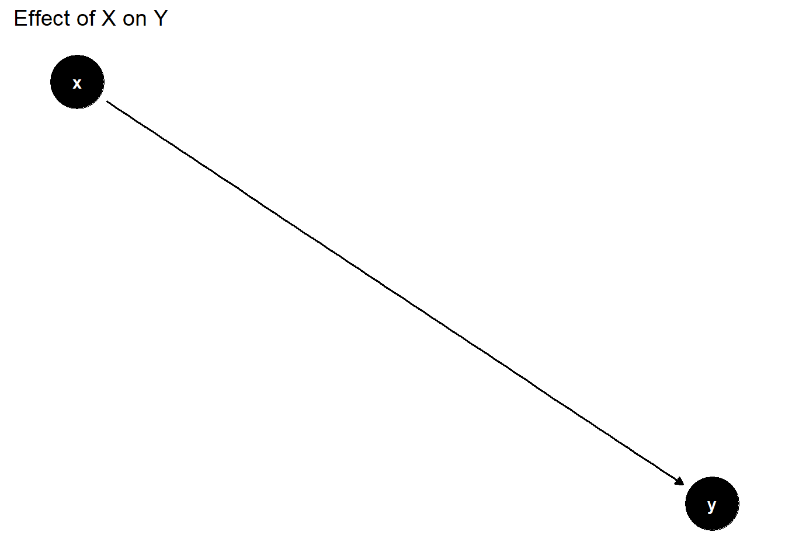
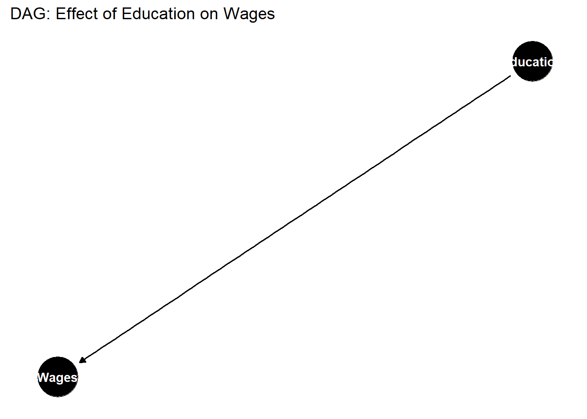
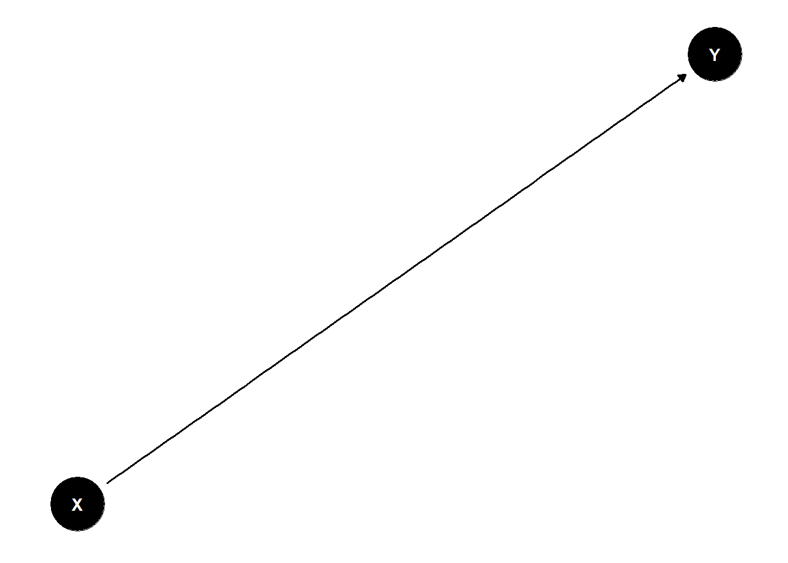
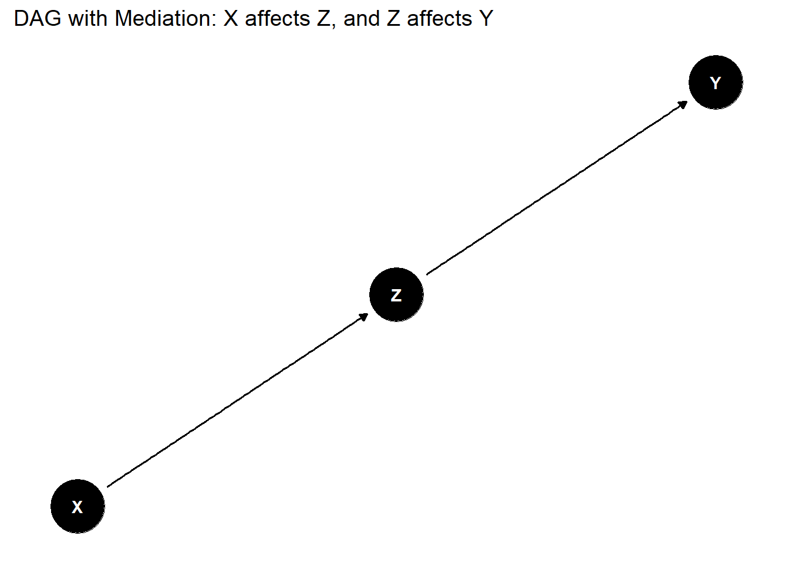
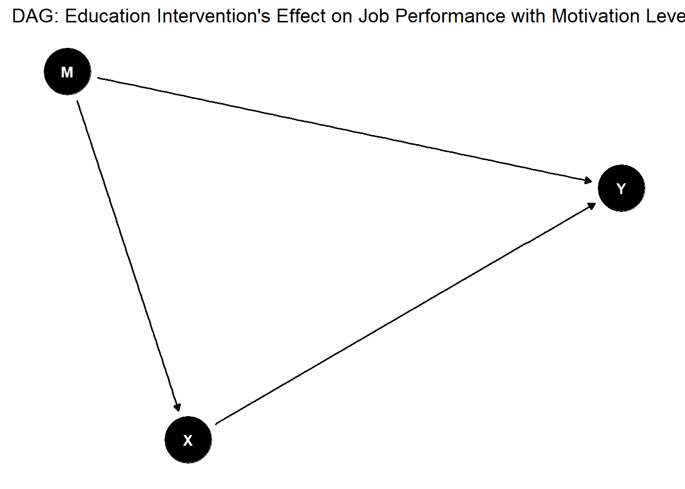
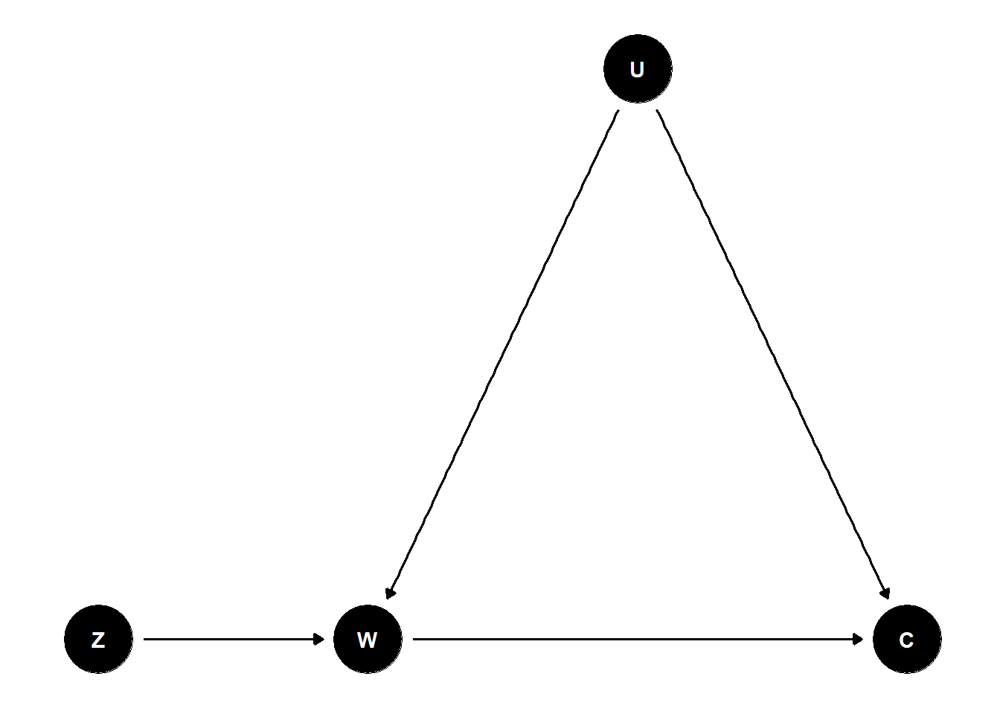

Tap here to see the code
# Define the DAG we are going to use dag0 for the first dag, you can use whatever name you like.
dag0 <- dagify(y ~ x)
# This plots the dag
ggdag(dag0) +
theme_dag() +
ggtitle("Effect of X on Y")

A DAG is a useful way of thinking about causal relationships. The concept of directed acyclic graphs, which we will refer to from now on as DAGs, began in the mid 20th century with the development of computer science. As with most of science DAGs came to solve the problem of graphing dependencies among variables. It is important to emphasize for the curious reader the author who has brought DAGs to be part of the causality literature and that man is Judea Pearl.
Here I present an example to demonstrate what I am talking about:
# Define the DAG we are going to use dag0 for the first dag, you can use whatever name you like.
dag0 <- dagify(y ~ x)
# This plots the dag
ggdag(dag0) +
theme_dag() +
ggtitle("Effect of X on Y")Unlike a normal graph DAGs go in one direction. What I mean is that we do not get cycles or feedback loops between the different nodes. This is a DAG:
Because DAGs are used in Graph Theory we will use the same notation and names that they use. Each “variable” is a node in the graph and each “arrow” represents the direction of the causal relationship.In the example above we see an arrow going from x to y a this represents a one-way causal relationship. We can think of the graph above as x being the interest rate and y being the cost of borrowing money.
library(ggdag)
library(dagitty)
# Define the non-causal DAG
dag_non_causal <- dagify(y ~~ x)
# Plot the non-causal DAG
ggdag(dag_non_causal) +
theme_dag() +
ggtitle("Non-causal relationship between X and Y")Here we can see a two way relationship which happens when x affects y and y affects x. The “arrows” connecting the two nodes (variables) are usually referred to as edges. When the edges are going in both directions we usually called them bi-directed edges. However, it is important to emphasize that this is not a DAG anymore but it represents a feedback loop.
To drive this concept home we will look at a DAG and its corresponding OLS regression equation. Please note that I am implicitly assuming that I have identified the correct relationship between the variables which is highly unlikely.
dag <- dagify(
Wages ~ Education,
labels = c("Education" = "Years of Schooling", "Wages" = "Income")
)
# Plot the DAG
ggdag(dag) +
theme_dag() +
ggtitle("DAG: Effect of Education on Wages")
This DAG represents the following OLS equation:
\[ \text{Wages} = \beta_0 + \beta_1 \text{Education} + \varepsilon \]
Regardless of whether this is the true OLS regression from wages is irrelevant. You’d be quick to notice that there is one thing differentiating this OLS equation from the DAG. This key differentiating aspect is the error term. In OLS regressions we usually assume that the error term is white noise of mean zero. However, a DAG would take it a step further an assume that this is the ultimate true relationship of the data generating process and there is no room for error.
You might be asking yourself what is the point of all of this? Why are we complicating the material with extra definitions and extra notation?
DAGs are useful when it comes to drawing causal relationships between variables. If X causes Y but Y does not cause X then we can represent this by the following graph:
dag1 <- dagify(
Y ~ X,
labels = c(X = "X", Y = "Y")
)
ggdag(dag1) +
theme_dag()
We can have a mediator between X and Y. So, X affects Y through Z.
dag2 <- dagify(
Y ~ Z,
Z ~ X,
labels = c(X = "X", Z = "Mediator Z", Y = "Y")
)
ggdag(dag2) +
theme_dag() +
ggtitle("DAG with Mediation: X affects Z, and Z affects Y")
A real life example of this \(X\) being technological innovation, \(Z\) being productivity and \(Y\) is Economic growth. Please note that this is just an example and you could find evidence that does not support this simplified version of reality.
DAGs could also help us to visualise some assumptions we as econometricians make. We could represent confounders in DAGs.
In causal inference a confounder is a variable that influences both the dependent variable and the independent variable causing a spurious association
dag3 <- dagify(
Y ~ X + M,
X ~ M,
labels = c(X = "Education Intervention", Y = "Job Performance", M = "Motivation Level"),
exposure = "X",
outcome = "Y"
)
ggdag(dag3, text = TRUE) +
theme_dag() +
ggtitle("DAG: Education Intervention's Effect on Job Performance with Motivation Level as a Confounder")
adjustedSet <- adjustmentSets(dag3)
print(adjustedSet){ M }In simple terms, the exogeneity assumption that all the explanatory variables are exogenous and therefore not influenced by other variables in the model or by the dependent variable.
This can be illustrated quite nicely using DAGs. Imagine you are investigating the effect of an educational program \(X\) on job performance \(Y\), with motivation \(M\) as a mediator then if the exogeneity assumption hold you would get something like this:
\[ X \rightarrow M \rightarrow Y \]
Instrumental variables (IV) like the name suggest are variables which are used as instruments to control for confounding and measurement error in observational studies. John Snow, one of the fathers of modern epidemiology is widely recognised from his work during the cholera outbreak in the mid-19th century. You might ask yourself, what does epidemiology and cholera have to do with IVs? well… bare with me for a second.
In 19th century London cholera was a big thing and it was taking hundreds of thousands of lives a year. People at that time thought that cholera was caused by “bad air” so they basically thought that cholera was transmitted via the air. Snow had a theory and to prove it he used instrumental variables before the term or the formality of instrumental variables was discovered.
To test his hypothesis that cholera was transmitted through the water rather than through air he used the proximity to the Broad Street pump in London as an instrument. Individuals near the pump are more likely to use it but are not inherently more likely to contract cholera from other reasons. For now, we will call this IV \(Z\). The treatment is drinking water from the Broad Street Pump \(W\). The outcome variable is the cholera infection which we will denote \(C\) and we let \(U\) denote the unobserved confounders which could be factors such as individual health (not great at the time) , sanitation practices, or other ways of contracting cholera not from the pomp.
As you can already be thinking using the proximity as the IV helps isolate the effect of the contaminated water on cholera.
IV<-dagify(C~W+U,W~U, W~Z)
coords<-list(x=c(W = 0, U = 1, C = 2, Z=-1),
y=c(W = 0, U = 0.1, C = 0, Z=0))
coords_df<-coords2df(coords)
coordinates(IV)<-coords2list(coords_df)
ggdag(IV)+theme_dag_blank()
# Code borrowed from https://donskerclass.github.io/EconometricsII/ControlandIV.htmlIt is important to notice that the instrument \(Z\) (proximity to the pump) for cholera infection \(C\) satisfies both the relevance assumption and the exogeneity assumption which makes this a valid IV.